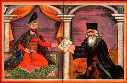
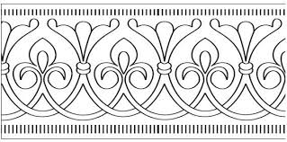

ქართული ენა და ლიტერატურა
ქართული ენა და ლიტერატურა არის ყველაზე კარგი საგანი ჩემთვის, რადგან ეს საგანი გვასწავლის არა მარტო ნაწარმოებებსა და ზღაპრებს არამედ გრამატიკულად გამართულ საუბარსაც რაც ერთგვარად ხელს უწყობს ორატორიის ჩამოყალიბებას,ასევე ესეების და სხვა მნიშვნელოვანი ჩანაწერების სწორად და გამართულად ჩაწერას
პატარა ინფორმაცია ამ საგანთან დაკავშირებით
ქართული ლიტერატურა წარმოადგენს ქართულ ენაზე დაწერილ ლიტერატურულ ნაწარმოებებს. ქართული ლიტერატურა სათავეს იღებს იაკობ ცურტაველის „შუშანიკის წამებიდან“, რომელიც უძველესი ქართული ჰაგიოგრაფიული თხზულებაა.ძველ ქართულ ხალხურ ლიტერატურას ეკუთვნის ბერიკაობა და სხვა სიმღერები.
პირველი ქართული წარწერა დათარიღებულია ჩვენი წელთაღრიცხვით 433 წლით და აღმოჩენილია ისრაელში. საქართველოში კი - ბოლნისის სიონის წარწერა(493-494).

